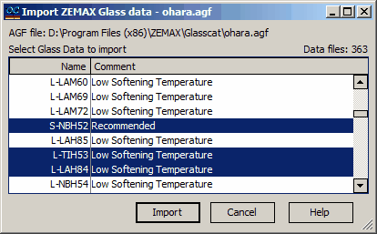

Import ZEMAX Glass data
Import ZEMAX Glass data

ZEMAX files with the .AGF extension contain dispersive data for multiple types of glasses. The list of available glasses within the .AGF file is displayed in a corresponding list within the software interface. Users have the option to select multiple glass types for import into the current Substrate database. Upon selecting the desired glass items, users can proceed by clicking the Import button. This action triggers the import process, transferring the selected glass types from the .AGF file into the current Substrate database within the OptiLayer software environment. This feature streamlines the process of importing dispersive data for various glasses and enhances the efficiency of database management within the optical design workflow.
|
Note: *.AGF files may contain dispersive formulas that are not currently supported by the OptiLayer software. In such cases, the dispersive data from the *.AGF file will be automatically converted to a table format during the import process. The wavelength grid for the dispersive data will be selected to match the wavelength grid used by the Internal Transmittance data from the same file. This conversion enables users to effectively utilize dispersive data from *.AGF files within the OptiLayer software environment, even if the original dispersive formulas are not directly supported by the software. The conversion to a table format ensures compatibility and consistency in managing dispersive data for optical design applications. |